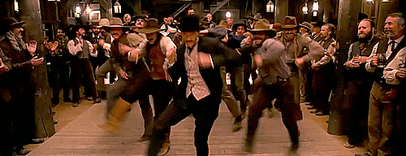

Country music, also known as country and western (or simply country), and hillbilly music, is a genre of popular music that originated in the southern United States in the early 1920s. It takes its roots from genres such as folk music (especially Appalachian folk and Western music) and blues.
Country music often consists of ballads and dance tunes with generally simple forms, folk lyrics, and harmonies mostly accompanied by string instruments such as banjos, electric and acoustic guitars, steel guitars (such as pedal steels and dobros), and fiddles as well as harmonicas. Blues modes have been used extensively throughout its recorded history.
The origins of country music can be found in recordings Southern Appalachian fiddle players made in the late 1910s. It wasn’t until the early ‘20s, however, that country music as a viable recorded genre took hold. he first commercial country record was made by Eck Robertson in 1922 on the Victor Records label. Vernon Dalhart had the first national country hit in 1924 with “Wreck of the Old ’97.” But most historians point to 1927, the year Victor Records signed Jimmie Rodgers and The Carter Family, as the true moment country music was born.
